How-To Guide: Using the growthcleanr (v3) Shiny Application
Source:vignettes/articles/how-to-shiny.Rmd
how-to-shiny.RmdIntroduction
Height, weight, and head circumference measurements collected in electronic health records (EHRs) are essential for patient-centered outcomes research (PCOR), comparative effectiveness research (CER), and studies of growth, obesity, chronic disease risk, and other health outcomes. However, these data often contain errors such as data-entry mistakes, incorrect units, duplicate measurements, or other implausible values that can distort analyses and lead to incorrect conclusions.
growthcleanr is an open-source R package designed to address these challenges. It provides automated methods for evaluating longitudinal anthropometric data and flagging measurements that may be erroneous or otherwise unsuitable for analysis. growthcleanr supports pediatric and adult data and evaluates weight, height/length, and head circumference measurements using age-appropriate cleaning algorithms. Unlike approaches that rely solely on cross-sectional thresholds, growthcleanr evaluates measurements within the context of an individual’s longitudinal growth trajectory, allowing it to identify implausible patterns and inconsistencies that may not be apparent when measurements are reviewed in isolation. growthcleanr was originally developed using real-world EHR data and has been validated on both real-world and synthetic datasets. By improving the quality of anthropometric data, growthcleanr helps researchers and healthcare organizations generate more reliable data for secondary analyses, better understand growth and chronic disease risk, and support informed clinical and population health decisions.
growthcleanr has been updated to improve cleaning performance, efficiency, and usability.
- Updates related to cleaning performance include improved handling of infant data, including for premature infants in outpatient settings; support for cleaning of head circumference data; improved handling of consecutive identical measurements (carried forwards) and consecutive erroneous values; and prespecified configurations for allowing more or less restrictive cleaning of adult data.
- Efficiency updates include a checkpointing system that reduces memory use and improved support for parallel processing.
- Usability updates include development of a Shiny app (described further below); simplified data entry; support for datasets in multiple formats; exclusion codes that are easier to understand and more relevant to researchers; a test data feature; more informative error messages; and a new output structure that returns the original data alongside cleaning results.
Version 3 of growthcleanr
(released in November 2026) includes a redesigned wrapper
function, cleangrowth(), which serves as the
primary entry point for data cleaning. The wrapper handles many
preprocessing and postprocessing tasks automatically, including
validating inputs, standardizing supported measurement types, routing
records to the appropriate pediatric or adult algorithm, assembling
outputs, and returning results in a user-friendly format.
For users who prefer not to work directly in R, the growthcleanr Shiny Application (“Shiny App”) provides a point-and-click interface for preparing and cleaning data, without the need for coding syntax. The Shiny App provides a graphical interface to the underlying growthcleanr workflow. Rather than requiring users to write R code, the application guides users through data selection, cleaning, review of exclusion recommendations, and export of results. This makes growthcleanr accessible to researchers, clinicians, quality-improvement teams, and other users with varying levels of programming experience.
At its core, growthcleanr helps users:
- Identify potentially erroneous measurements
- Flag and categorize data quality issues
- Review exclusion recommendations
- Evaluate unit-conversion concerns and carried-forward values
- Efficiently and reproducibly prepare cleaned datasets for downstream analyses
Simple Workflow Overview
Workflow Steps

Most users will complete four basic steps:
- Prepare your data with the required variables.
- Run
cleangrowth()to evaluate measurements. - Review the output and exclusion recommendations. Recommendations can be used directly from growthcleanr or customized by researchers.
- Create an analysis-ready dataset using observations classified as suitable for inclusion. Optional utility functions can reshape data and calculate BMI-related measures.
Required Input Variables
The following variables (columns) are required when running growthcleanr. Default variable (column) names and default coding for those variables are below. Alternate names and alternate coding schemes may be used.
| Variable | Description |
|---|---|
subjid
|
Unique subject identifier (numeric or string) |
param
|
Measurement type (defaults WEIGHTKG, HEIGHTCM, HEADCM) |
agedays
|
Age in days at measurement (numeric) |
sex
|
Sex, code as M (male) or F (female). Sex may be blank or NA for the adult algorithm (by default switches to adult at 20y, can adjust to 18y). |
measurement
|
Recorded measurement value (not rounded) |
Users are also strongly encouraged to include a unique row-level
identifier, which can be numeric or string. Providing a unique ID
(id) ensures handling of ties and duplicate measurements
and improves reproducibility across runs. When no valid ID is supplied,
growthcleanr generates an internal identifier and preserves the
original data unchanged in the output.
Supported Measurement Types
Metric measurements (kilograms, centimeters) are strongly preferred, but growthcleanr can also accept imperial measurements (pounds, inches).
What Does growthcleanr Return?
Unlike earlier versions that returned exclusion codes as a vector that had to be recombined with a user’s dataset, the current version returns a complete data table containing:
- Your original data
- Exclusion recommendations (column:
exclude) - Binary inclusion/exclusion classifications (column:
bin_exclude) - Unit-error-range indicators (column:
unit_error_range) - Optional diagnostic columns when requested
Technical reference: See Output: the cleangrowth() return value for a complete description of all output columns and optional diagnostics.
Using the growthcleanr Shiny App
The growthcleanr Shiny App provides a point-and-click interface. Users can select data, configure cleaning options, run growthcleanr, and review results without writing R code.
Before You Begin
Although the growthcleanr Shiny App does not require users to write R code during data cleaning, it does run through R on your computer. This is necessary to keep your data secure. As a result, a one-time setup is required before you can launch the application.
There are three components involved:
- R: the software that runs the application.
- Shiny: the R package that allows the application to operate.
- growthcleanr Shiny App: the point-and-click interface used for data selection, cleaning, review, and export.
The Shiny App must be launched from R during each session of data cleaning and/or analysis (described below). Once the Shiny App is launched, the remaining steps can be completed through the point-and-click interface. The Shiny App supports many data format options, but some advanced options are only available in R.
Important: Users who prefer working in R should visit: https://growthcleanr.org/articles/how-to-r.html.
Step 1: Install growthcleanr and Launch the Shiny App Using R
The growthcleanr and Shiny packages are both required to run the growthcleanr Shiny App. The growthcleanr package will automatically install the Shiny package, so installing the growthcleanr package will allow you to run the Shiny App (described below).
Note: For first time use, users will need to run
install.packages("growthcleanr") followed by
library(growthcleanr) and growthcleanr_app().
Following the first time installation, most users will only need to run
library(growthcleanr) and growthcleanr_app().
Users working in virtual desktop environments (for example, Citrix) may
need to reinstall packages if their environment does not retain
installed software between sessions. These steps are described
below.
Install R
- Visit https://cran.r-project.org/
- Download R version appropriate for your operating system (Windows, Mac, or Linux).
- Follow the installation instructions provided by CRAN.
- Additional instructions on R installation can be found here
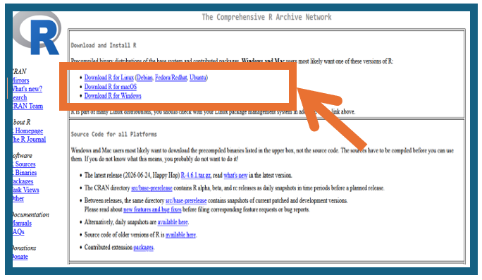
Open R
- Open R from your computer’s Start Menu (Windows) or Applications folder (Mac).
- The R Console window will appear showing a prompt with an arrow and cursor. This indicates R is ready to accept commands.
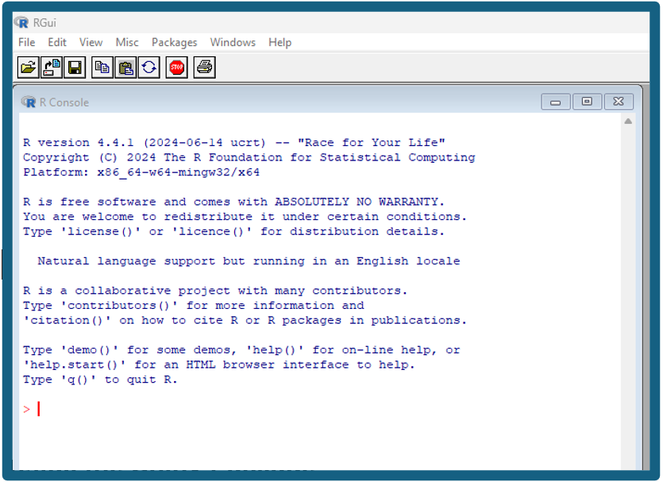
Install growthcleanr Package
Once R is open, copy and paste the following command into the R Console and press Enter.
For users running R directly on their own computers, the installation commands only need to be completed once. However, users working in virtual desktop environments (for example, Citrix or other cloud-based R environments) may need to reinstall packages each time a new session is started, depending on how that environment is configured.
install.packages("growthcleanr")
After you press Enter, R will display messages showing the
progress of the installation. If prompted to select a CRAN mirror,
choose a location near you. Depending on your internet connection and
computer settings, you may see information about downloading files,
installing dependencies, building packages, and testing the
installation. This output is expected and may take several minutes to
complete.
When installation is finished, R will return to a command prompt
(>). You may also see a message “The downloaded
source packages are in…” followed by a file location on your
computer. This message indicates that the package was downloaded and
installed successfully and is not an error. Once the command prompt
(>) reappears, you can proceed to the next command. The
screenshot below illustrates the installation for
install.packages("growthcleanr").
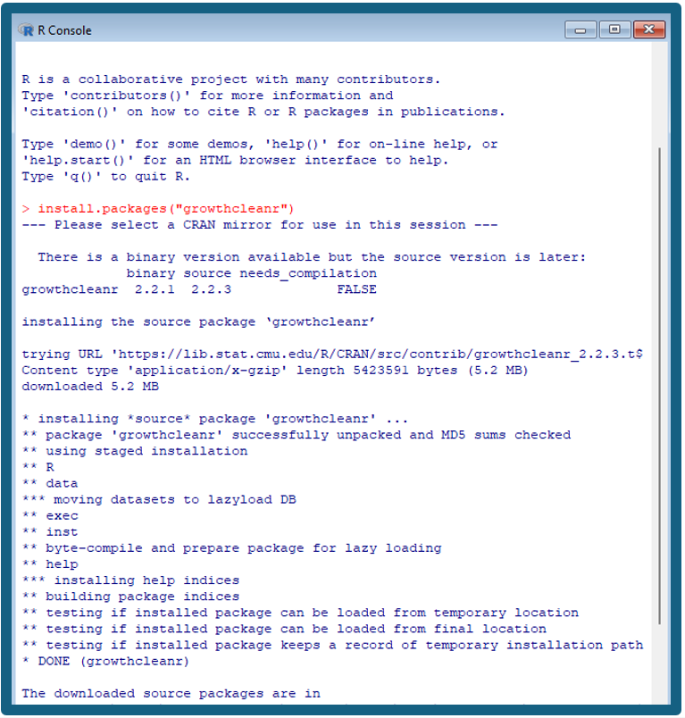
Launch the growthcleanr Shiny App
After package installation is complete, or if you previously
installed growthcleanr on your computer using R, copy and paste
the following commands into the R Console one at a time, pressing Enter
after each command. The library() command loads the
growthcleanr package into your current R session, and
growthcleanr_app() launches the Shiny App.
For future sessions, most users will only need to run these two commands to launch the application. Users working in virtual desktop environments (for example, Citrix) may need to reinstall packages if their environment does not retain installed software between sessions.
Once the application launches, it will open in a web browser
window. Although the application is displayed in a browser, it runs
locally on your computer through R rather than through a public website.
All data remain on your local machine. All remaining data selection,
cleaning, review, and export steps can be completed through the
point-and-click interface without writing R code.
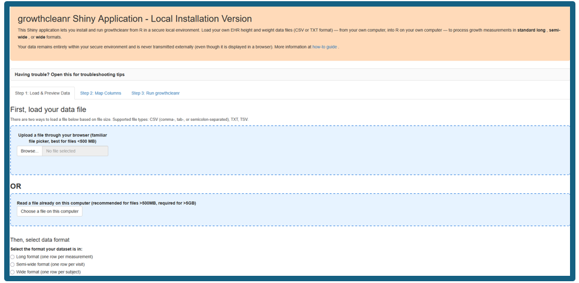
Step 2: Select and Preview Data
Before selecting your data, verify that your dataset is saved
as a comma-separated values (.csv), tab-delimited text
(.txt), or tab-separated values (.tsv)
file. The file should contain variables corresponding to the
required inputs for growthcleanr: a subject identifier
(subjid), measurement type (param), age in
days (agedays), sex (sex), and measurement
value (measurement). See Required Input Variables for
detailed descriptions of each variable. A unique row-level identifier
(id) is also strongly recommended. The default measurement
types are WEIGHTKG, HEIGHTCM, and HEADCM, although alternative
measurement types and coding schemes can be mapped during data
import.
For instructions and a tutorial about making CSV files, see How to get your data into CSV format and back out again.
To begin, navigate to “Step 1: Load & Preview Data” and use the “Select the format your dataset is in” option to choose the appropriate format. Please note that steps in the Shiny App and steps in this guide differ by 1 number (for example, “Step 1: Load & Preview Data” is under Step 2: Select and Preview Data in this guide).
The growthcleanr Shiny App accepts data in long, semi-wide, and wide formats. Descriptions for each format are listed below.
Long format: Each row contains a single measurement for a subject at a specific age. This is the default format used by growthcleanr. For example, a child with weight and height recorded at the same visit would have two rows: one for weight and one for height.
Long format is recommended because it is the native format used internally by growthcleanr, but all three formats are supported by the Shiny App. The default measurement types are: WEIGHTKG, HEIGHTCM, and HEADCM. Using metric units is strongly recommended. For information on using imperial units, see the wrapper/cleangrowth() pipeline.

Semi-wide format: Each row represents a single
subject visit or age, with separate columns for different measurement
types (for example, weight and height).

Wide format: Each subject appears on a single row,
with measurements across multiple ages or time points stored in separate
columns.

Load Your File
After selecting the data format, choose how you would like to load your file:
- Upload a file through your web browser: Recommended for most datasets and generally works best for files smaller than approximately 500 MB.
- Read a file already on this computer: Recommended for larger datasets (greater than approximately 500 MB) and required for files larger than 5 GB.
After selecting a file-loading method, choose the appropriate input format and load your dataset. The screenshots below illustrate two scenarios:
-
Scenario #1: Data with default variable names:
Dataset uses expected growthcleanr variable names (for example,
subjid,param,agedays,sex, andmeasurement)
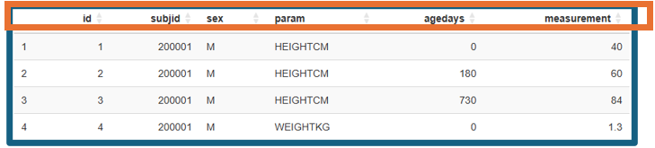
- Scenario #2: Data with custom variable names: Dataset uses different column names and variables must be mapped to the appropriate growthcleanr inputs during selection.
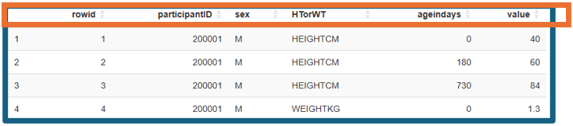
After data selection, verify that:
- Variables were imported correctly. Confirm that the expected columns appear in the data preview and that text, numeric, and date fields were interpreted correctly. For example, an incorrect data import may include birthdates as the age variables (below):
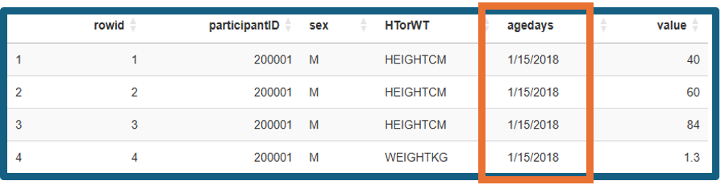
- Confirm that values appear as expected. For example, check several weight values to make sure they are in the range expected for weight in the chosen unit.
- Row counts match the original dataset. The number of records displayed in the app should match the number of records in the source file.
- Missing values are handled appropriately. Review the preview to identify unexpected blank values or columns that may not have imported correctly.
- Subject identifiers and ages appear reasonable. Verify that subject IDs uniquely identify individuals and that age values are reported in days.
Because growthcleanr evaluates measurements within an individual’s longitudinal growth trajectory, accurate subject identifiers and age values are particularly important.
Step 3: Map Columns and Validate Your Data
After your file has been selected, click on “Step 2: Map Columns” to review the column mappings to ensure that growthcleanr correctly identifies the required variables.
When mapping variables, verify the following:
-
Patient Subject ID (
subjid) column identifies each individual and is mapped to the correct identifier field. -
Parameter (
param) column contains the measurement type values (for example, WEIGHTKG, HEIGHTCM, or HEADCM). -
Measurement (
measurement) column contains the recorded measurement values (not rounded). -
Age calculated as number of days since birth date
(
agedays) column contains age at measurement expressed in days. -
Sex (
sex) column contains the sex variable. By default, growthcleanr recognizes0,M,Male,B, orBoyas male and1,F,Female,G, orGirlas female (case-insensitive). The application will automatically identify common coding schemes and populate the sex-coding settings when recognized. Users will be prompted to confirm that the detected coding is correct. Please note that for growthcleanr users who also use the cdcanthro package, the use ofM/ForB/Gcoding is recommended. The cdcanthro package uses codes1for male and2for female. To prevent coding conflicts, growthcleanr will return an error if it detects the use of1/2coding.
-
Observation ID (
id) (optional) contains a unique row-level identifier, if available. Providing an Observation ID improves reproducibility and handling of duplicate measurements. - Parameter value labels match the labels used in your dataset for weight, height, and head circumference measurements.
- Units (kg/lb and cm/in) accurately reflect the units used in the source data.
- Optional date-of-birth and visit-date fields may be supplied when available but are not required.
- Keep only the columns growthcleanr needs (optional) may be selected to retain only the variables required for processing and output. This option can reduce memory use and is recommended for large datasets.
As described above, the mapping process depends on whether your dataset uses the default growthcleanr variable names (Scenario 1) or custom variable names (Scenario 2).
Scenario 1: If your dataset uses the default variable names (
subjid,param,agedays,sex,measurement), these fields may be populated automatically.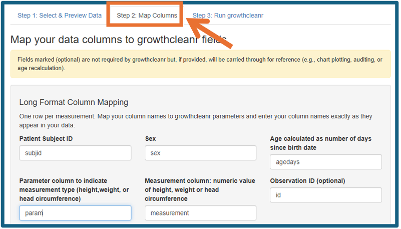
Scenario 2: If your dataset uses different variable names, select the appropriate column for each required input.
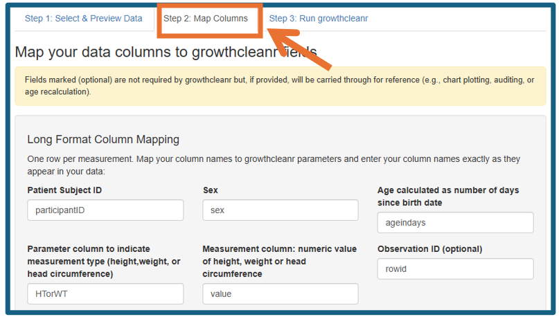
Once all mappings have been reviewed, click “Apply Mapping.” Confirm all variables look correct in the “Mapped Data Preview.”
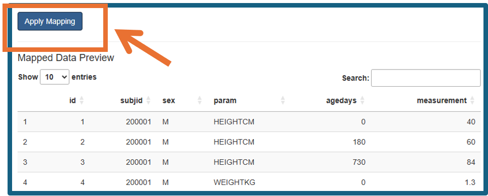
Step 4: Run growthcleanr
First, select Step 3: Run growthcleanr. Click “Verify growthcleanr version” to confirm growthcleanr has loaded successfully.
Then, optionally, click “Run quick test” to perform a diagnostic check on a random sample of up to 100 patients before processing the full dataset. This step allows you to identify potential data formatting, mapping, or configuration issues and confirm that the workflow is functioning as expected before running the complete cleaning process.
Finally, once the quick test has completed (or if you choose to skip it), click “Clean my data” to process the selected dataset.
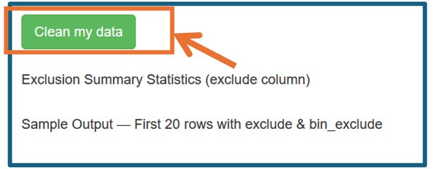
During processing, growthcleanr: - Evaluates pediatric and adult records using age-appropriate algorithms. - Identifies implausible values. - Identifies carried-forward measurements. - Chooses a single value for evaluation if multiple values are present for the same subject, age, and growth parameter. - Produces user-friendly output classifications.
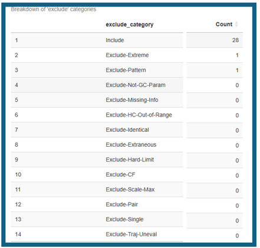
Technical reference: See Technical reference: the cleangrowth() pipeline for a description of preprocessing, batching, adult/child routing, and output assembly. Details of the individual algorithms are available here: Technical reference: child algorithm and Technical reference: adult algorithm.
Step 5: Review Results
After processing is complete, growthcleanr displays a summary of the cleaning results within the application. The results view includes:
- An exclusion summary showing the number of measurements assigned to each inclusion or exclusion category.
- A summary line indicating how many measurements were included, displayed as “X of Y measurements included.”
- A preview of the first 20 rows of the cleaned output dataset, allowing users to review results before downloading.
The returned dataset contains your original data plus cleaning results. growthcleanr does not remove observations. Instead, it provides a recommendation to include or exclude each measurement including a broad reason for exclusion. Key output columns include:
| Column | Purpose |
|---|---|
exclude
|
Summary exclusion recommendation indicating a broad reason for exclusion |
bin_exclude
|
Binary inclusion/exclusion classification |
unit_error_range
|
Indicator of possible unit conversion error |
-
excludecolumn. Theexcludecolumn contains the primary cleaning result and is intended for routine use by most researchers. It returns “Include” for values that it recommends retaining for analysis and “Exclude-[Reason]” for values that it recommends excluding.-
Technical reference: See Exclusion
codes for the complete catalog of summary and detailed exclusion
classifications.
-
Technical reference: See Exclusion
codes for the complete catalog of summary and detailed exclusion
classifications.
bin_excludecolumn. Similar to theexcludecolumn, but returns “Include” and “Exclude” without adding the reason for exclusion, allowing for simple filtering of values.-
unit_error_rangecolumn: Theunit_error_rangefield is informational and identifies a value that could represent unit error in a child with typical growth. It is calculated separately from exclusions. Children with atypical growth may have true measurements in this range, so being in unit error range does not automatically trigger an exclusion. However, if unit errors are universal or nearly universal (such as with data processing or metadata errors), the longitudinal growthcleanr algorithm may not recommend exclusion of these values if they represent atypical but internally consistent growth. If a large proportion of values in a dataset are flagged withunit_error_range = TRUE, human assessment of the data is needed.-
Technical reference: See Output: the
cleangrowth() return value and Technical
reference: algorithm functions for details on the
unit_error_rangeflag and how it is generated.
-
Technical reference: See Output: the
cleangrowth() return value and Technical
reference: algorithm functions for details on the
-
Note on head circumference results. Head circumference measurements are supported through age five years.
- Technical reference: See Technical reference: child algorithm for a detailed discussion of head circumference processing and age restrictions.
Step 6: Create an Analysis-Ready Dataset
After reviewing the cleaning results within the application, click “Save results (CSV)” to save the cleaned dataset. The exported file contains both the original data and all growthcleanr output variables, including inclusion and exclusion recommendations.
A common workflow is to retain measurements classified as “Include.”
Researchers can create an analysis-ready dataset using observations
where the exclude variable is equal to “Include”, while
retaining the full output dataset for quality-control review,
documentation, and reproducibility. Researchers should review exclusion
patterns and assess whether additional investigation is warranted before
proceeding with analysis.